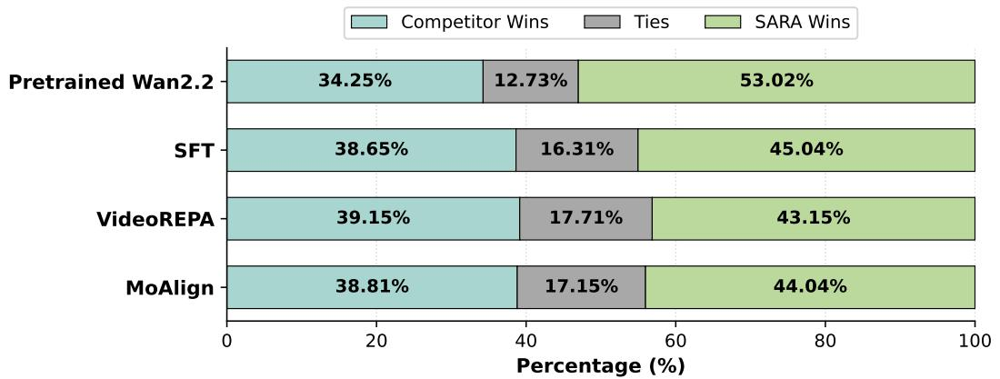

arXiv 更新 · P2 · 2026-06-10
SARA：它说明冻结 VFM feature/token relation 正在成为视频生成模型的蒸馏监督，和视觉基础模型作为 teacher 的趋势一致
从“所有 token relation 一视同仁”转向“按 prompt 语义重要性分配关系蒸馏预算”，更适合复杂文本视频生成。
编号2605.07800
优先级P2
类别arXiv 更新
会议arXiv 更新
方法保留从冻结 visual foundation model 蒸馏 spatio-temporal token relations 的 TRD 框架，同时加入 text-conditioned saliency，决定哪些 token pairs 最该接受关系监督；Stage 1 用 per-entity SAM 3.1 mask supervision 和 InfoNCE 训练 aligner。
来源arXiv / OpenReview
先说结论。它说明冻结 VFM feature/token relation 正在成为视频生成模型的蒸馏监督，和视觉基础模型作为 teacher 的趋势一致。 从“所有 token relation 一视同仁”转向“按 prompt 语义重要性分配关系蒸馏预算”，更适合复杂文本视频生成。


核心问题
它说明冻结 VFM feature/token relation 正在成为视频生成模型的蒸馏监督，和视觉基础模型作为 teacher 的趋势一致。
方法拆解
保留从冻结 visual foundation model 蒸馏 spatio-temporal token relations 的 TRD 框架，同时加入 text-conditioned saliency，决定哪些 token pairs 最该接受关系监督；Stage 1 用 per-entity SAM 3.1 mask supervision 和 InfoNCE 训练 aligner。
主要贡献
从“所有 token relation 一视同仁”转向“按 prompt 语义重要性分配关系蒸馏预算”，更适合复杂文本视频生成。
实验看点
摘要强调目标是减少视频扩散模型中的实体丢失、属性错绑和交互弱化问题，并把连续 saliency 融入 pair-routing operator。
局限与读法
仍主要服务视频扩散生成的 text following；对通用视频理解表征是否更好没有直接结论。